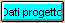
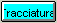

La progettazione di una tracciatura passa attraverso le seguenti fasi:
Si entra in questa fase premendo il pulsante della finestra principale. Le operazioni di questa fase sono descritte nel Cap. Dati generali.
Si entra in questa fase premendo il pulsante

della finestra principale. Le operazioni di questa fase sono descritte nel Cap. Dati iniziali.Si entra in questa fase premendo il pulsante

della finestra principale. Le operazioni di questa fase sono descritte nel Cap. Dati finali.